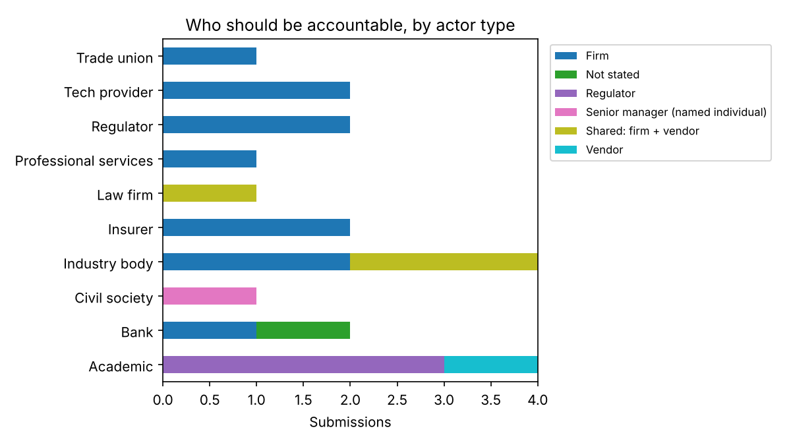
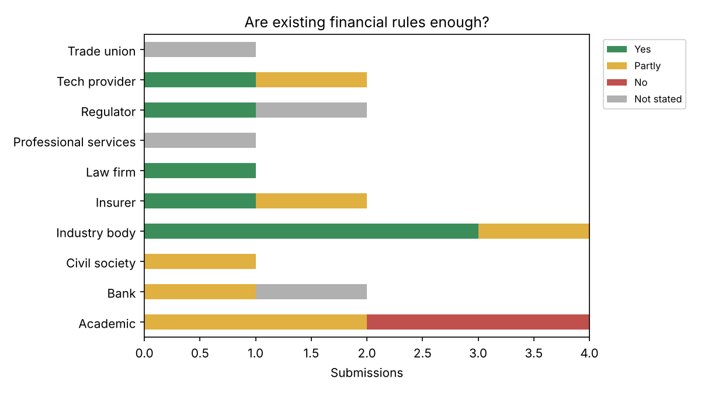
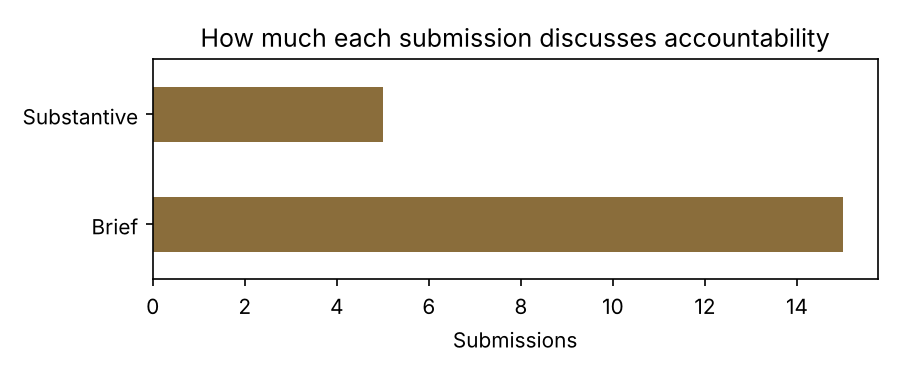

An evidence map of written submissions to the House of Commons Treasury Committee's inquiry into AI in financial services (launched February 2025; report published January 2026). Coded by Archit Gupta (University of Bristol) as an independent project alongside his undergraduate dissertation. 20 of the 82 published submissions coded so far. Codes follow codebook.md in this project's GitHub repository.



| Ref | Submitter | Actor | Primary / secondary accountable | Rules enough? | Depth / evidence | Argument, quote and notes |
|---|